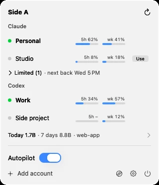
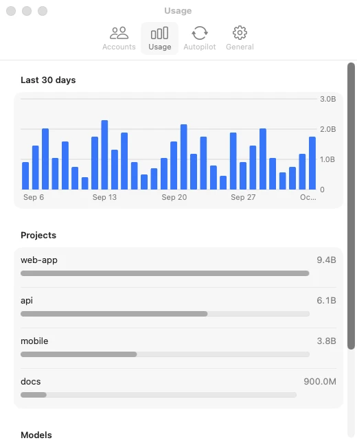

Never waste a limit you paid for.
Side A watches every Claude Code and Codex account and keeps you on the one about to lose the most.


The quota that expires first goes first
Switches without breaking your flow
Running sessions move at a pause. Nothing restarts.
Answer from anywhere
Requests and finished sessions open at the notch.
Catch a stuck session
Send it a note or stop it, without finding its terminal.
See what your plan is worth
Your tokens, priced at API rates.
Safe on your Mac
- Logins stay in your Keychain. Never copied or uploaded.
- Changes to your files are marked and removable in Settings.
- Open source. Not affiliated with Anthropic or OpenAI.